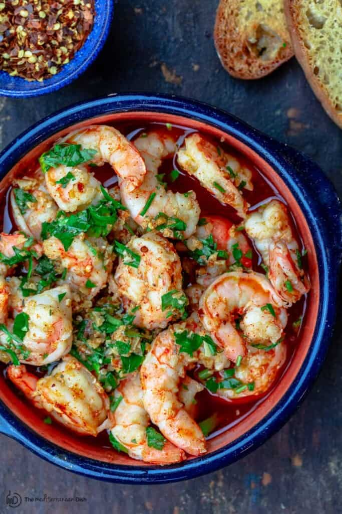

Gambas al Ajillo

Where to begin
Gambas al ajillo was one of my favorite dishes during my travels in Spain. This would be brought out to us with the oil still boiling in the bowels. All that is needed is some good crusty bread to soak up all that goodness!
Ingredients
- 1 lb large shrimp, peeled and deveined
- Kosher salt
- 1/2 cup extra virgin olive oil
- 10 garlic cloves, chopped
- 1 teaspoon red pepper flakes
- 1 teaspoon paprika
- 2 tablespoons dry sherry or dry white wine
- Juice of 1/2 Lemon
- 1/2 cup chopped fresh parsley
Instructions
- Pat the shrimp dry and season with kosher salt. Set aside.
- Heat the extra virgin olive oil over medium heat until shimmering. Add the garlic and red pepper flakes. Cook for 1 minute or until the garlic begins to brown.
- Add the shrimp and paprika. Cook briefly, tossing regularly, until the flesh turns opaque (about 3 minutes or so; this will depend on the size of the shrimp). Remove the pan from the heat.
- Stir in sherry, lemon juice and parsley.
- Transfer the shrimp and sauce to a serving bowl. Serve with some delicious sourdough bread.